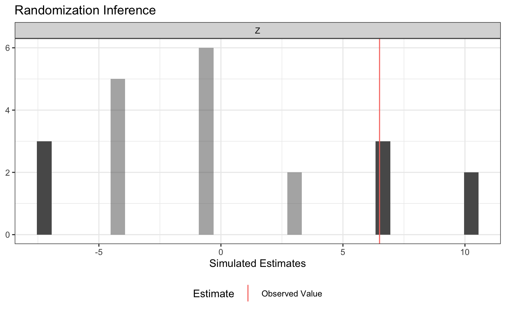
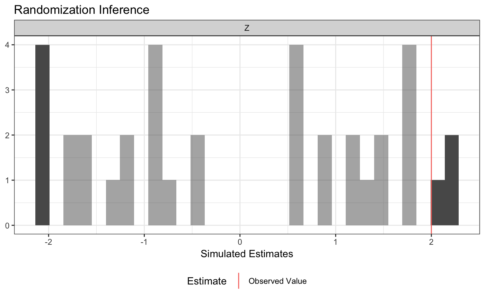
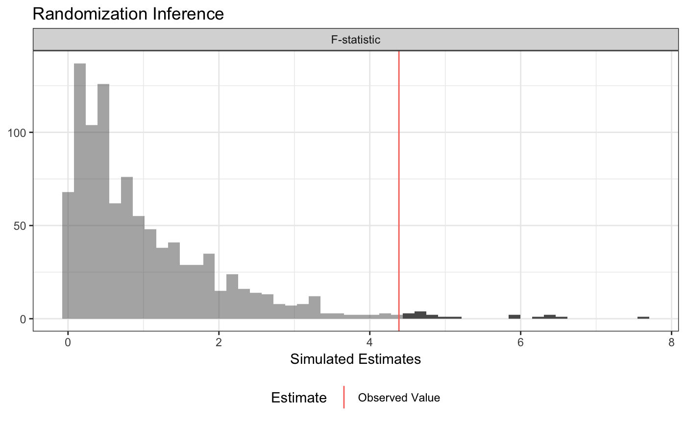
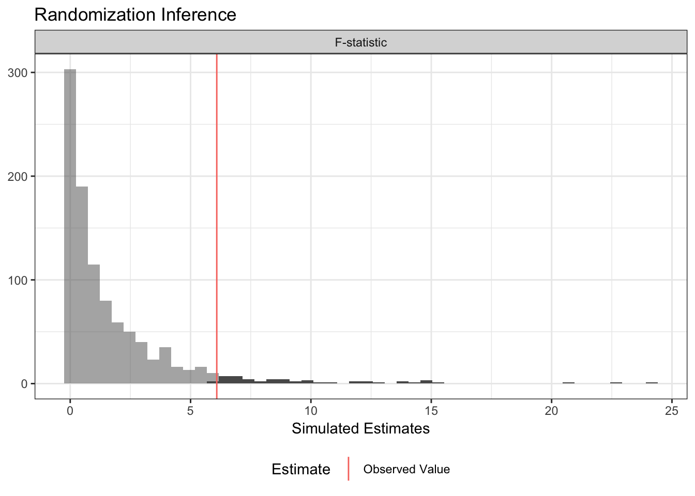
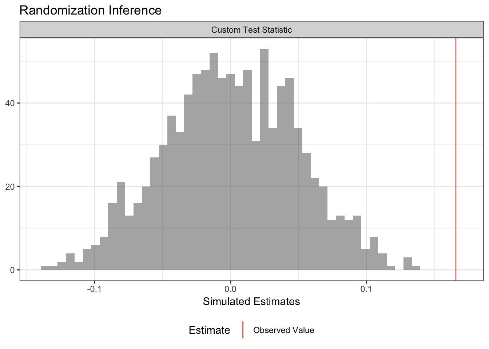
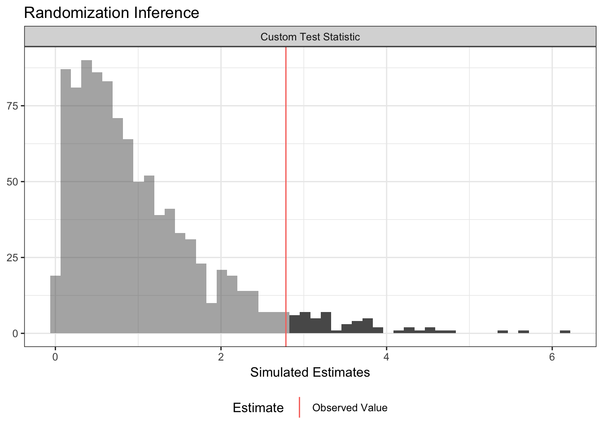

ri2_vignette.RmdRandomization inference (RI) is procedure for conducting hypothesis tests in randomized experiments. RI is useful for calculating the the probability that:
That probability is sometimes called a \(p\)-value.
Randomization inference has a beautiful logic to it that may be more appealing to you than traditional hypothesis frameworks that rely on \(t\)- or \(F\)-tests. For a really lovely introduction to randomization inference, read Chapter 3 of Gerber and Green (2012).
The hard part of actually conducting randomization inference is the accounting. We need to enumerate all (or a random subset of all) the possible randomizations, correctly implement the null hypothesis, maybe figure out the inverse probability weights, then calculate the test statistics over and over. You can do this by hand with loops. The ri2 package for r was written so that you don’t have to.1
Gerber and Green (2012) describe a hypothetical experiment in which 2 of 7 villages are assigned a female council head and the outcome is the share of the local budget allocated to water sanitation. Their table 2.2 describes one way the experiment could have come out.
table_2_2 <- data.frame(Z = c(1, 0, 0, 0, 0, 0, 1),
Y = c(15, 15, 20, 20, 10, 15, 30))In order to conduct randomization inference, we need to supply 1) a test statistic, 2) a null hypothesis, and 3) a randomization procedure.
formula argument of the conduct_ri function is similar to the regression syntax of r’s built-in lm function. Our test statistic is the coefficient on Z from a regression of Y on Z, or more simply, the difference-in-means.sharp_hypothesis argument of the conduct_ri function indicates that we are imagining a (hypothetical!) world in which the true difference in potential outcomes is exactly 0 for all units.declare_ra function from the randomizr package allows us to declare a randomization procedure. In this case, we are assigning 2 units to treatment out of 7 total units.
library(ri2)## Loading required package: randomizr## Loading required package: estimatr
# Declare randomization procedure
declaration <- declare_ra(N = 7, m = 2)
# Conduct Randomization Inference
ri2_out <- conduct_ri(
formula = Y ~ Z,
declaration = declaration,
sharp_hypothesis = 0,
data = table_2_2
)
summary(ri2_out)## term estimate two_tailed_p_value
## 1 Z 6.5 0.3809524
plot(ri2_out)
The ri2 package has specific support for all the randomization procedures that can be described by the randomizr package:
See the randomizr vignette for specifics on each of these procedures.
By way of illustration, let’s take the blocked-and-clustered design from the ri package help files as an example. The call to conduct_ri is the same as it was before, but we need to change the random assignment declaration to accomodate the fact that clusters of two units are assigned to treatment and control (within three separate blocks). Note that in this design, the probabilities of assignment to treatment are not constant across units, but the conduct_ri function by default incorporates inverse probability weights to account for this design feature.
dat <- data.frame(
Y = c(8, 6, 2, 0, 3, 1, 1, 1, 2, 2, 0, 1, 0, 2, 2, 4, 1, 1),
Z = c(1, 1, 0, 0, 1, 1, 0, 0, 1, 1, 1, 1, 0, 0, 1, 1, 0, 0),
cluster = c(1, 1, 2, 2, 3, 3, 4, 4, 5, 5, 6, 6, 7, 7, 8, 8, 9, 9),
block = c(rep(1, 4), rep(2, 6), rep(3, 8))
)
# clusters in blocks 1 and 3 have a 1/2 probability of treatment
# but clusters in block 2 have a 2/3 probability of treatment
with(dat, table(block, Z))## Z
## block 0 1
## 1 2 2
## 2 2 4
## 3 4 4
block_m <- with(dat, tapply(Z, block, sum) / 2)
declaration <-
with(dat,{
declare_ra(
blocks = block,
clusters = cluster,
block_m = block_m)
})
declaration## Random assignment procedure: Blocked and clustered random assignment
## Number of units: 18
## Number of blocks: 3
## Number of clusters: 9
## Number of treatment arms: 2
## The possible treatment categories are 0 and 1.
## The number of possible random assignments is 36.
## The probabilities of assignment are NOT constant across units. Your analysis strategy must account for differential probabilities of assignment, typically by employing inverse probability weights.
ri2_out <- conduct_ri(
Y ~ Z,
sharp_hypothesis = 0,
declaration = declaration,
data = dat
)
summary(ri2_out)## term estimate two_tailed_p_value
## 1 Z 2 0.1944444
plot(ri2_out)
A traditional ANOVA hypothesis testing framework (implicitly or explicitly) compares two models, a restricted model and an unrestricted model, where the restricted model can be said to “nest” within the unrestricted model. The difference between models is summarized as an \(F\)-statistic. We then compare the observed \(F\)-statistic to a hypothetical null distribution that, under some possibly wrong assumptions can be said to follow an \(F\)-distribution.
In a randomization inference framework, we’re happy to use the \(F\)-statistic, but we want to construct a null distribution that corresponds to the distribution of \(F\)-statistics that we would obtain if a particular (typically sharp) null hypothesis were true and we cycled through all the possible random assignments.
To do this in the ri2 package, we need to supply model formulae to the model_1 and model_2 arguments of conduct_ri.
In this example, we consider a three-arm trial. We want to conduct the randomization inference analogue of an \(F\)-test to see if any of the treatments influenced the outcome. We’ll consider the sharp null hypothesis that each unit would express exactly the same outcome regardless of which of the three arms it was assigned to.
N <- 100
# three-arm trial, treat 33, 33, 34 or 33, 34, 33, or 34, 33, 33
declaration <- declare_ra(N = N, num_arms = 3)
Z <- conduct_ra(declaration)
Y <- .9 * .2 * (Z == "T2") + -.1 * (Z == "T3") + rnorm(N)
dat <- data.frame(Y, Z)
ri2_out <-
conduct_ri(
model_1 = Y ~ 1, # restricted model
model_2 = Y ~ Z, # unrestricted model
declaration = declaration,
sharp_hypothesis = 0,
data = dat
)
plot(ri2_out)
summary(ri2_out)## term estimate two_tailed_p_value
## 1 F-statistic 1.013943 0.36## Analysis of Variance Table
##
## Model 1: Y ~ 1
## Model 2: Y ~ Z
## Res.Df RSS Df Sum of Sq F Pr(>F)
## 1 99 81.238
## 2 97 79.575 2 1.6636 1.0139 0.3666Oftentimes in an experiment, we’re interested the difference in average treatment effects by subgroups defined by pre-treatment characteristics. For example, we might want to know if the average treatment effect is larger for men or women. If we want to conduct a formal hypothesis test, we’re not interested in testing against the sharp null of no effect for any unit – we want to test against the null hypothesis of constant effects. In the example below, we test using the null hypothesis that all units have a constant effect equal to the estimated ATE. See Gerber and Green (2012) Chapter 9 for more information on this procedure.
N <- 100
# two-arm trial, treat 50 of 100
declaration <- declare_ra(N = N)
X <- rnorm(N)
Z <- conduct_ra(declaration)
Y <- .9 + .2 * Z + .1 * X + -.5 * Z * X + rnorm(N)
dat <- data.frame(X, Y, Z)
# Observed ATE
ate_hat <- coef(lm(Y ~ Z, data = dat))[2]
ate_hat## Z
## 0.2049911
ri2_out <-
conduct_ri(
model_1 = Y ~ Z + X, # restricted model
model_2 = Y ~ Z + X + Z*X, # unrestricted model
declaration = declaration,
sharp_hypothesis = ate_hat,
data = dat
)
plot(ri2_out)
summary(ri2_out)## term estimate two_tailed_p_value
## 1 F-statistic 6.614815 0.006## Analysis of Variance Table
##
## Model 1: Y ~ Z + X
## Model 2: Y ~ Z + X + Z * X
## Res.Df RSS Df Sum of Sq F Pr(>F)
## 1 97 96.061
## 2 96 89.869 1 6.1923 6.6148 0.01165 *
## ---
## Signif. codes: 0 '***' 0.001 '**' 0.01 '*' 0.05 '.' 0.1 ' ' 1A major benefit of randomization inference is we can specify any scalar test statistic, which means we can conduct hypothesis tests for estimators beyond the narrow set for which statisticians have derived the variance. The ri2 package accommodates this with the test_function argument of conduct_ri. You supply a function that takes a data.frame as its only argument and returns a scalar; conduct_ri does the rest!
For example, we can conduct a difference-in-variances test against the sharp null of no effect for any unit:
N <- 100
declaration <- declare_ra(N = N, m = 50)
Z <- conduct_ra(declaration)
Y <- .9 + rnorm(N, sd = .25 + .25*Z)
dat <- data.frame(Y, Z)
# arbitrary function of data
test_fun <- function(data) {
with(data, var(Y[Z == 1]) - var(Y[Z == 0]))
}
# confirm it works
test_fun(dat)## [1] 0.1659939
ri2_out <-
conduct_ri(
test_function = test_fun,
declaration = declaration,
assignment = "Z",
outcome = "Y",
sharp_hypothesis = 0,
data = dat
)
plot(ri2_out)
summary(ri2_out)## term estimate two_tailed_p_value
## 1 Custom Test Statistic 0.1659939 0Researchers sometimes conduct balance tests as a randomization check. Rather than conducting separate tests covariate-by-covariate, we might be interested in conducting an omnibus test.
Imagine we’ve got three covariates X1, X2, and X3. We’ll get a summary balance stat (the \(F\)-statistic in this case), but it really could be anything!
N <- 100
declaration <- declare_ra(N = N)
dat <-
data.frame(
X1 = rnorm(N),
X2 = rbinom(N, 1, .5),
X3 = rpois(N, 3),
Z = conduct_ra(declaration)
)
balance_fun <- function(data) {
summary(lm(Z ~ X1 + X2 + X3, data = data))$f[1]
}
# Confirm it works!
balance_fun(dat)## value
## 1.401898
ri2_out <-
conduct_ri(
test_function = balance_fun,
declaration = declaration,
assignment = "Z",
sharp_hypothesis = 0,
data = dat
)## Warning in data.frame(est_sim = test_stat_sim, est_obs = test_stat_obs, : row
## names were found from a short variable and have been discarded
plot(ri2_out)
summary(ri2_out)## term estimate two_tailed_p_value
## 1 Custom Test Statistic 1.401898 0.261##
## Call:
## lm(formula = Z ~ X1 + X2 + X3, data = dat)
##
## Residuals:
## Min 1Q Median 3Q Max
## -0.72059 -0.47237 0.02975 0.46984 0.71228
##
## Coefficients:
## Estimate Std. Error t value Pr(>|t|)
## (Intercept) 0.66696 0.12279 5.432 4.21e-07 ***
## X1 0.07399 0.05589 1.324 0.189
## X2 -0.15557 0.10079 -1.543 0.126
## X3 -0.02501 0.03054 -0.819 0.415
## ---
## Signif. codes: 0 '***' 0.001 '**' 0.01 '*' 0.05 '.' 0.1 ' ' 1
##
## Residual standard error: 0.4995 on 96 degrees of freedom
## Multiple R-squared: 0.04197, Adjusted R-squared: 0.01203
## F-statistic: 1.402 on 3 and 96 DF, p-value: 0.247All of the randomization inference procedures had to, somehow or other, provide three pieces of information:
Randomization inference is a useful tool because we can conduct hypothesis tests without making additional assumptions about the distributions of outcomes or estimators. We can also do tests for arbitrary test statistics – we’re not just restricted to the set for which statisticians have worked out analytic hypothesis testing procedures.
A downside is that RI can be a pain to set up – the ri2 package is designed to make this part easier.
The ri2 package is the successor to the ri package, written by Peter Aronow and Cyrus Samii. ri was lightweight, fast, and correct for the set of tasks it handled. ri2 hopes to be all that and more.↩︎